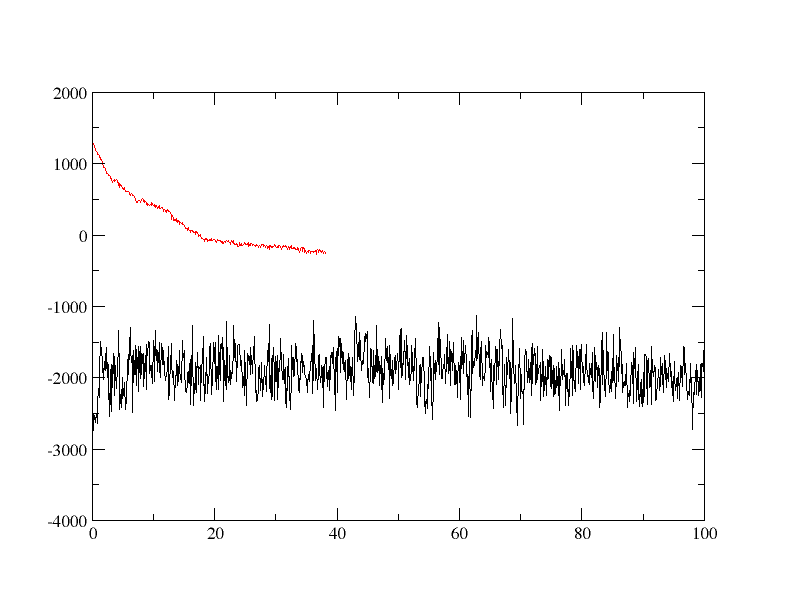

Analysis¶
So, now we’ve run the simulations what do we want to look at?
First off, we want to look through the mdout files (dodecamer_vac_md1_12Acut.out, dodecamer_vac_md1_nocut.out).
It is also a good idea to extract the various energies as a function of time to plot the total, kinetic, potential energies, etc.
We also want to calculate RMSd vs. time, etc.
To look at movies (which is much more fun :-) ) we can use a visualization program such as VMD to load up the “parm and crd” (i.e. AMBER prmtop and MD trajectory) and use the animation controls to view it-more on this later.
Extracting the energies from the mdout file¶
One can write an awk or sed script to pull out the energies, etc. These can be pulled out of the mden file if energy information was written out (which we didn’t do) or directly from the mdout file.
We will use the script process_mdout.perl that has been designed to process mdout files and create a series of files with the various different pieces of information in them.
The program uses a default output filename so it is best to create a sub directory for each of your output files and move to there before running the script e.g.
mkdir vac_12Acut
cd vac_12Acut
process_mdout.perl ../dodecamer_vac_md1_12Acut.out
You should repeat this process for the nocut output file, even though the simulation did not complete all 100,000 steps (make sure to go back to your simulation directory before this, cd ..)
mkdir vac_nocut
cd vac_nocut
process_mdout.perl ../dodecamer_vac_md1_nocut.out
This script takes a series of mdout files and will create a series, leading off with the prefix “summary.” such as “summary.EPTOT”, of output files. These files are just columns of the time vs. the value for each of the energy components.
You can plot the summary files with your favorite graphing program.
A useful program for just quickly looking at a plot of a file is xmgrace, a very simple plotting program, but ideal for our purpose. To plot the total potential energy, of both runs, as a function of time we run, assuming we are in our master simulation directory:
xmgrace vac_12Acut/summary.EPTOT vac_nocut/summary.EPTOT
You will see a plot similar to the following:
You can also create a plot in Python using matplotlib with a script like the one below
import sys
import matplotlib.pyplot as plt
files = sys.argv[1:]
for file in files:
with open(file) as f:
data = f.readlines()
x = []
y = []
for line in data:
x.append(float(line.split()[0]))
y.append(float(line.split()[1]))
plt.plot(x, y)
plt.savefig("output.png")
You can then create a plot by typing
python create_plot.py vac_nocut/summary.EPTOT vac_12Acut/summary.EPTOT
You will have an image similar to the following in the file output.png
In our plots, the longer simulation is the 12 angstrom cutoff simulation. As we can see, the 12 angstrom cutoff simulation seems to be fairly stable since the potential energy is fluctuating around a constant mean value. The simulation without a cutoff, however, is significantly different. To begin with the potential energy is some 3,000 kcal/mol higher than the 12 angstrom cutoff simulation. The potential energy is so large in fact that it is actually positive. The potential energy also decreases rapidly over the first 10 ps of simulation suggesting that a large structural change is occurring. The simulation then ends abruptly after 38.1ps with the following error:
Frac coord min, max: -3.5683830309286483E-004 0.99717755462998503
The system has extended beyond
the extent of the virtual box.
Restarting sander will recalculate
a new virtual box with 30 Angstroms
extra on each side, if there is a
restart file for this configuration.
SANDER BOMB in subroutine Routine: map_coords (ew_force.f)
Atom out of bounds. If a restart has been written,
restarting should resolve the error
Why the difference in potential energy? Well, by looking at our two output files this can be tracked down to the difference in the electrostatic energy. For the first step we have:
12 A Cut Off:
NSTEP = 0 TIME(PS) = 0.000 TEMP(K) = 299.61 PRESS = 0.0
Etot = -2751.3345 EKtot = 676.9496 EPtot = -3428.2840
BOND = 37.0482 ANGLE = 107.7566 DIHED = 637.7764
1-4 NB = 188.3005 1-4 EEL = -3188.2567 VDWAALS = -420.6286
EELEC = -790.2805 EHBOND = 0.0000 RESTRAINT = 0.0000
------------------------------------------------------------------------------
No Cut Off:
NSTEP = 0 TIME(PS) = 0.000 TEMP(K) = 299.61 PRESS = 0.0
Etot = 1701.3466 EKtot = 676.9496 EPtot = 1024.3971
BOND = 37.0482 ANGLE = 107.7566 DIHED = 637.7764
1-4 NB = 188.3005 1-4 EEL = -3188.2567 VDWAALS = -424.1288
EELEC = 3665.9008 EHBOND = 0.0000 RESTRAINT = 0.0000
------------------------------------------------------------------------------
Notice how the value of EELEC is so much larger in the no cutoff simulation.
So, what has happened and how can we learn more? Well, first, let’s look at another type of analysis we can perform on the results, in this case, analysis of the MD trajectory files. From this we can hopefully understand what is happening.
Calculating the RMSd vs. time¶
The next step in analyzing our results is to calculate the RMSd as a function of time using cpptraj (an analysis program provided with AmberTools).
The precise parameter we will be calculating in this example is the mass weighted RMSd fit between each successive structure and the first structure of our trajectory.
This is done by providing an input file to cpptraj containing a list of commands describing the relevant files and what we want it to do, etc.:
parm dodecamer_vac.prmtop
trajin dodecamer_vac_md1_12Acut.nc
rms first mass out dodecamer_vac_md1_12Acut.rms time 0.1
go
Repeat the analysis for the simulation with no cut off
parm dodecamer_vac.prmtop
trajin dodecamer_vac_md1_nocut.nc
rms first mass out dodecamer_vac_md1_nocut.rms time 0.1
go
Use xmgrace or matplotlib to create a plot of the RMSd.
You will see a plot similar to the following:
And here we see the problem. While the 12 angstrom cutoff simulation has a largely constant RMSd around 2.2 angstroms the no cutoff simulation shows a steadily increasing RMSd which after 20 ps is already over 30 angstroms!!! This would suggest that something has gone wrong with the simulation since our system has essentially “blown up.” But, is this the whole story? Or does it mask a larger problem with running a simulation in vacuum? Why does the use of a cutoff result in a stable trajectory while the use of no cutoff (which should in theory be more accurate) leads to a “blow up”?
Let’s think about this more carefully. Our DNA molecule consists of two chains held together by hydrogen bonds. Each chain has a net charge of -9 electrons. So, our chains have a large electrostatic repulsion as shown by the value of EELEC in the no cutoff simulation (EELEC = 1356.1545). Thus the two chains are repelling each other. For the system to be stable, the interaction between the chains, largely due to hydrogen bonding, must counteract this large electrostatic repulsion. Now, in the case where we used a 12 angstrom cutoff, all charges beyond the 12 angstroms distance were considered to have zero energy. Since the average distance between the negative charges on the DNA backbone due to the phosphate groups is 15 angstroms, the repulsion between the phosphate atoms on opposite chains was ignored when the 12 angstrom cutoff was employed. The electrostatic attraction due to hydrogen bonding between opposite bases is due to a much closer interaction, of the order of 2 angstroms. Thus while the main electrostatic repulsion interaction was excluded when we used the 12 angstrom cutoff, the main attractive force between the two chains was included so the chain held together and we obtained a stable trajectory.
In the next lessons, we will visualize the trajectories to get a better idea of what happened.